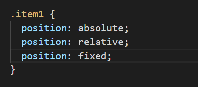
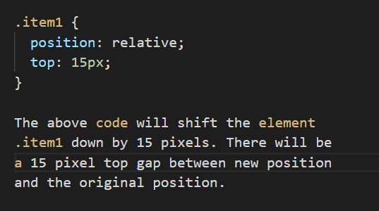
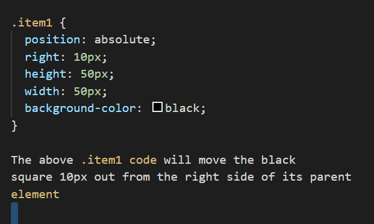
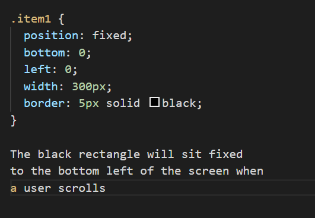

The differences between absolute, fixed and relative positioning
Relative, Absolute and Fixed are ways in which you can position elements on a web page using CSS. It allows you to place elements, such as images, where you want them. Webpages are made up of rectangular containers. If you imagine that each webpage is all blocks of text and images placed in rectangles, you can see that you will want to tell these rectangles where to sit on the page. This is where the property of ‘position’ comes in. Using CSS, you can use the position property and the values of ‘relative’, ‘absolute’ and ‘fixed’ to tell the rectangles where to sit. There are other ways in which you can do this using other properties and values however here I will only cover positioning. Examples of this code are seen below. You can only use one of these positions at a time.
Relative
If you use relative positioning by itself, with no measurements given, nothing will happen. You can’t use ‘position: relative;’ alone, it needs to be paired with an instruction stating where the element should sit ‘relative’ to itself. You can use ‘top’, ‘left’, ‘bottom’ and ‘right’ as instructions (attributes) to guide where the element should be placed, along with a measurement of how far you want the element to move from itself/its current place. Once the element is moved, no other elements on the page will move to fill the gap that has been left.

Absolute
Absolute positioning allows you to move an element relative to its parent element. If there is no parent element it will be positioned relative to the ‘body’ of the html page. As per the position of relative, you can use ‘top’, ‘left’, ‘bottom’ and ‘right’ as attributes for the positioning of the element.

Fixed
Fixed positioning is fixed in place relative to the viewport (the browser window). It allows you to take an element and make it static on the page, in other words, to fix it in one place and not have it move even when a user scrolls. An example of this would be a navigation bar. When a user scrolls further down the page the nav bar stays in one place while the rest of the page content moves.
